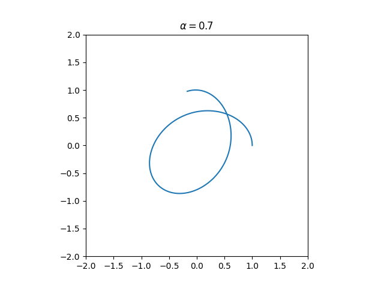
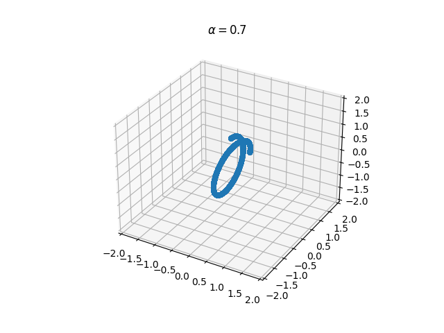

documentation capture from multiple-scattering using Monte Carlo method
This is the documentation and development progress checking forthe current Python code for the simulation of dark matter scattering of dark matter capture of astrophysical objects using the Monte Carlo method.
1. KEPLERIAN ORBITS
A. Simulation methods
Plans: There are two calculation algorithms currentlyin comparison: Python self-writting verlet and fortran binary of the swifter package.
Concerns: Writing the simulation code using Python3 provides us with the benefit of language compatibility to many of the modern libraries. It is however an interpreter language itself which truncates time consumption. It is thus our ultimate goal to produce simulation results with a reasonably fast code together with calculations with precise and accurate result to display the dark matter scattering process.
1. Python 3: Numerical integration
1.1 Verlet method
The algorithm of verlet is fairly simple. By knowing the initial position and velocity, in our 3D simulation, the following steps for numerical integration is implemented.
$$r[i + 1] = r[i] + v[i] \times h + 0.5 \times a[i] \times \frac{h^2}{2}$$ $$v[i + 1] = v[i] + a[i] \times \frac{h}{2}$$ $$a[i + 1] = g(M, r[i + 1], r_*)$$ $$v[i + 1] = v[i + 1] + a[i + 1] \times \frac{h}{2}$$
1.2 Results
With the variation of initial velocity, which fundamentally affects the trajectory, with the initial position at \(\mathbf{r} = (x,y,z) = (1, 0, 0)\) and \(\mathbf{v} = (0, \alpha \times 2\pi, 0)\). Note that here we uses the unit set of AU for length, Solar Mass for mass, and year for time. And \(\alpha\) is the tuning parameters for sanity checking for elliptical orbits.
|  |
|  | Figure 1.2 These plots are the 2D (up) and 3D (down) plots of dark matter particle orbit about sun at the origin under solely the influence of gravitational attraction. |
{kind=link}
{kind=link}
It can be seen that by tuning the parameter \(\alpha\), the shape of orbit changes drastically but still remain planar.
For documentation purposes, the stepsize \(h=0.00005\) the time taken to generate 100 cycle takes local machine CPU time is 1m28.449s. This serves as a reference comparison runtime.
1.3 Convergence test
The current plots generated using integrator of verlet method is concluded that the keplers orbit (initial condition dependent), appears to not be energy conserved, with certain choice of stepsize.

|
| Figure 1.1 Convergence test for kepler's orbit plotting in evaluating energy loss qualitatively. |
It is then motivated to make use of the package swifter with sympletic integrators for celestial mechanics.
2. Fortran wrapper for integrator application
It is, after multiple hours of compiling and debugging, realized that the compilation of swifter is highly dependent on the OS -lSystem always fails to compile on MacOS.
Successful compilation of Swifter allows us to move our execution of integration from python to fortran developed codes.
2.1 Making use of
swifter_tu4
After successful compilation, there are a few notes worth mentioning for the investigation in swifter.
2.1.a Input files
There are 3 input files.
- param.in: This file specifies the location of pl.in and tp.in also the simulation tuning parameters.
- pl.in: This file contains information of multiple planets.
- tp.in: This file contains information for particles (massless).
bin.dat,
discard.out
,
dump_pl1.bin,
follow.out,
param_test.in,
pl_test.in
tp_test.in. The sample files for single orbiting problem can be found in the links above.